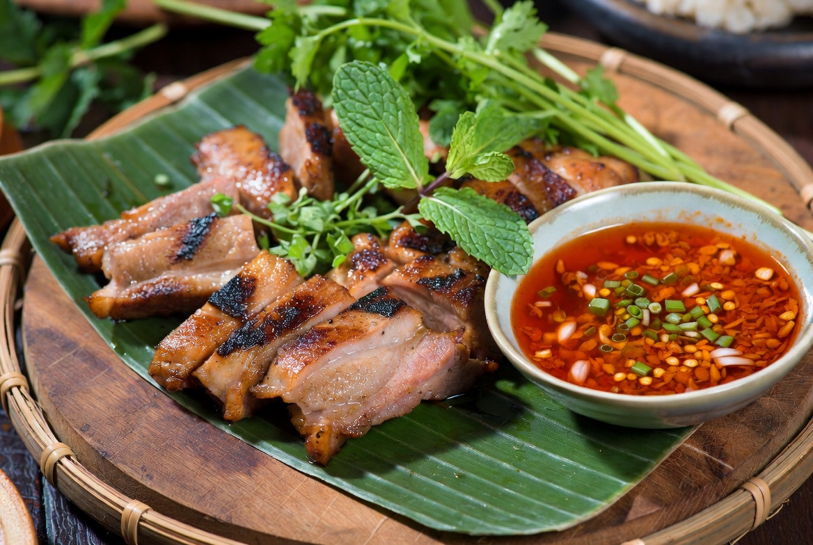

In-Depth • Culture & Isan
The Soul of Isan: 10 Essential Dishes of Thailand's Northeast
Published 10 July 2026 • 9 min read

Esan (or Isan) cuisine is the fiery, fragrant, and deeply satisfying soul food of Thailand's northeastern region. Born from the crossroads of Thai, Lao, and Khmer influences, it celebrates bold contrasts: smoky grilled meats against bright herbal salads, the sour punch of fermented fish sauce against cooling sticky rice, and the communal joy of eating with your hands.
At its heart lies khao niao — glutinous sticky rice — steamed in bamboo baskets and eaten by hand, rolled into small balls to scoop up every last drop of sauce. The four fundamental flavours — spicy, sour, salty, sweet — are balanced with masterful precision in nearly every dish.
Unlike the refined curries of central Thailand, Esan cooking is rustic, bold, and unapologetic. Charcoal smoke perfumes the air at every evening market. Fresh herbs (mint, coriander, sawtooth coriander) are used with abandon. Fermented ingredients like pla ra (fermented fish sauce) add profound umami depth that lingers beautifully.